Assembly of the Behavioral Training Rig
This guide describes how to assemble and connect the standard IBL behavioral training rig used for the steering-wheel task.
Important
This page covers the physical rig, wiring, and hardware checks. For current IBLRIG v8 software installation and configuration, see Installation guide. For operating instructions, see Using IBLRIG v8.
For parts, quantities, and purchasing information, see Bill of Materials: Behavior Rig.
Introduction
The standard IBL behavioral rig is designed for head-fixed steering-wheel tasks. It combines off-the-shelf components with manufactured and 3D-printed parts so that laboratories can reproduce a common apparatus.
The steering-wheel task and its original apparatus were introduced by the Cortex Lab, as described by Burgess et al. (2017).
This guide covers physical assembly and wiring. The latest CAD resources are available on Figshare:
Build and assembly
Apparatus
The apparatus was designed to train head-fixed mice on the steering-wheel task and acquire behavioral data. This setup is not used to perform electrophysiological recording of brain activity.
All the material used for the rig can be found in the Bill of Materials: Behavior Rig. Briefly, the setup comprises :
a rig screen, with a Fresnel lens and polarising filter
a detachable, magnetic mouse holder, comprising:
a steering wheel
a water-delivery system
a head-fixation assembly, comprising a translational stage to adjust the animal’s position
various sensors:
a microphone
an ambient sensor, measuring:
air humidity
temperature
a camera and an infrared light source
a sound module
a Sanworks Bpod state machine and PC as main controller
{kind=link}
{kind=link}
The Standard behavioral rig. Top: CAD rendering of the whole setup, with apparatus labelled. Bottom: CAD rendering of the mouse holder.
A 3D rendered video of the behavioral training rig CAD model can be found on Figshare: https://doi.org/10.6084/m9.figshare.13042574
Dimensions of the standardised behavioral rig:
height: 32.3 cm
depth: 30 cm
width: 39 cm
Note: there is some variability in the width (±1.5 cm), depending on the camera placement during setup.
Apparatus wiring connections
Apparatus connected to Bpod |
||
|---|---|---|
Port type |
Port no |
Item connected |
TTL I/O |
In1 |
Frame2TTL |
In2 |
Sound card Ch2 Camera (Green, Black2) |
|
Behavior Port |
Port 1 |
Port interface board |
Module |
Port 1 |
Rotary encoder module |
Module |
Port 2 |
Ambient Sensor |
USB |
USB |
Behavior PC |
Power |
Power |
12V power supply |
Apparatus connected to other modules |
||
|---|---|---|
Module type |
Port no |
Item connected |
Port interface board |
Port 1 (Valve) |
Valve (both wires) |
Port 1 (GND , S) |
Camera (Purple, Black1) |
|
Rotary encoder module |
+5V |
Rotary encoder (Brown) |
A |
Rotary encoder (Green) |
|
B |
Rotary encoder (Grey) |
|
GND |
Rotary encoder (White) |
|
Z |
Rotary encoder (Blue if present) |
|
State Machine |
Bpod |
|
Sound module |
Out1 - |
Speaker - |
Out1 + |
Speaker + |
|
Ch2 |
Bpod TTL I/O 2 + Camera (Green) |
|
Ch2 gnd |
Bpod TTL I/O 2 - Camera (Black2) |
|
Power |
12V power supply |
|
Audio In |
PC sound card (headphones) |
Apparatus connected to the PC |
||
|---|---|---|
Port type |
Port no |
Item connected |
Graphics card |
1 |
Display Monitor |
2 |
Rig Screen |
|
PC sound card |
headphones |
Sound module |
USB Port |
any |
Camera |
USB Port |
any |
Microphone |
USB Port |
any |
Frame2TTL |
USB Port |
any |
Bpod |
USB Port |
any |
Rotary Encoder Module |
Task definition
A steering wheel is placed under the front paws of a head-fixed mouse, and the wheel’s rotation is coupled to the horizontal position of a visual stimulus on the screen. Turning the wheel left or right moves the stimulus left or right. The mouse is then trained to decide whether a stimulus appears on its left or its right. Using the wheel, the mouse indicates its choice by moving the stimulus to the center. A correct decision is rewarded with a drop of water and short intertrial interval, while an incorrect decision is penalized with a longer timeout and auditory noise.
For further information on the task, see International Brain Laboratory (2020), Appendix 2: IBL protocol for mice training.
Frame and components
The setup itself comprises a rig screen installed on two posts, a mouse holder with a steering wheel encoder and head-fixation assembly, and a water-delivery system. Here we describe the assembly of the frame required to hold these and other components together.
{kind=link}
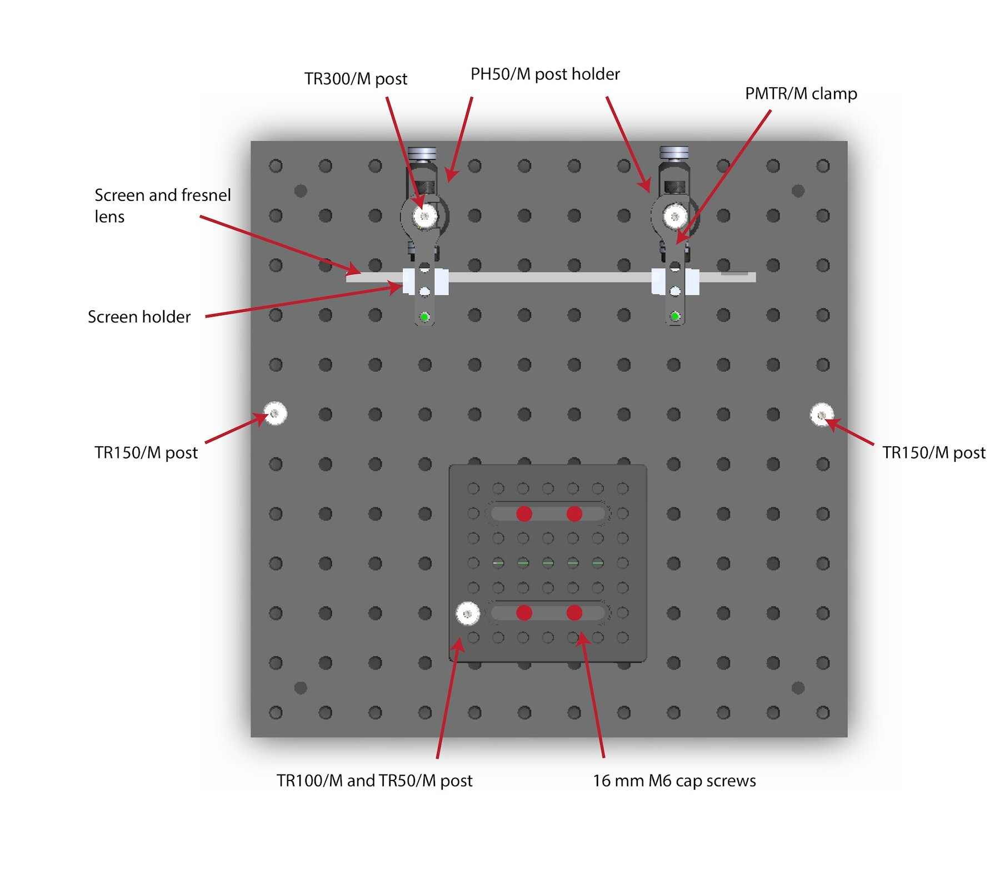
Rig footprint diagram. The steering-wheel setup is contained entirely within a frame made of Thorlabs components, all seated on a 300 mm x 300 mm aluminium breadboard (MB3030/M). Components can be secured to the breadboard using 16 mm M6 cap screws. The screen/Fresnel assemblies are seated between four grooved screws on clamps (two bottom, two top) that are attached to 300 mm posts. The mouse itself is seated on a 3D-printed holder (not shown) that attaches to a magnetic plate in the center of the frame.
Enclosure box
The rig will be placed in an acoustic enclosure box, if using the IBL standard Orion acoustic enclosure, follow step one. If using a separate sound proof enclosure, proceed to step 2. If using a different enclosure, it is recommended that a fan is used to maintain a cool temperature in the box as the hardware produces a significant amount of heat over a training session.
Preparing the box
Note
The original design of the box has the cable hole at the top and the ventilator with power supply on the right-hand side. You can, however, reverse the side of the box (placing it upside down), as shown in the images below. The door can also be removed and flipped if desired.
Remove the four vertical rail posts by unscrewing them.
Attach the white fan component to the side of the fan using velcro tape if it came loose during shipping.
Position two 40x510 mm rails in the back of the box using four M5 screws (hex cap screws are easiest) on either side. The screw which is the closest towards you should be in the third to last slot in the side guides. The other three screws should be in the second to last slot in the side guides.
{kind=link}
{kind=link}
Place the Bpod in the center of the rail platform with the power and USB input facing towards you.
Attach the other components to the rails at the position shown in the pictures below.
{kind=link}
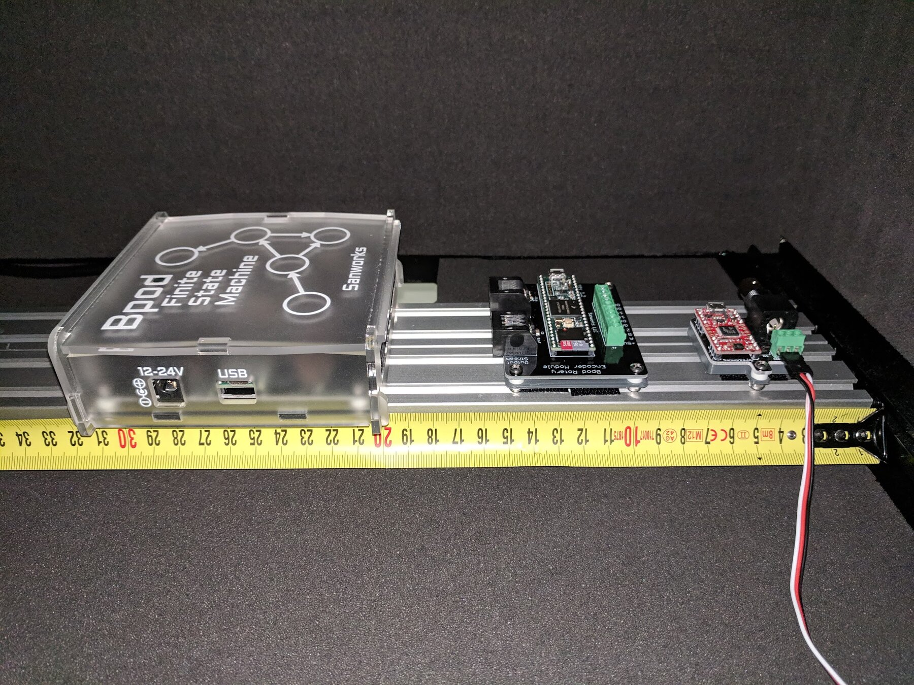
Bpod, rotary encoder module, and Frame2TTL module.
{kind=link}
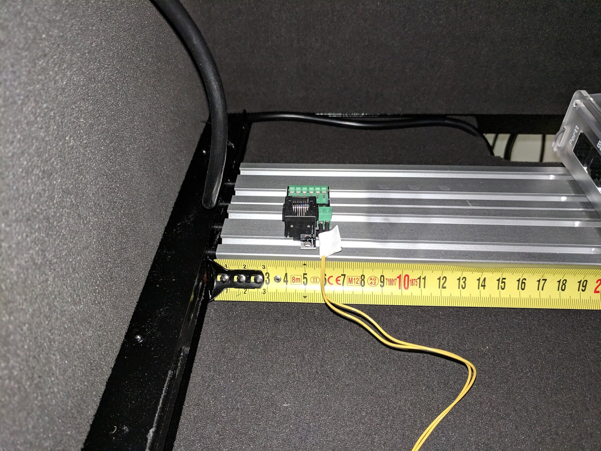
Valve and camera module.
Use a piece of velcro tape to attach the water reservoir on the outside of the box as shown.
Use a screwdriver or other pointy object to puncture a hole in the vent (square grid opposite to the ventilator with power supply) and feed the tubing through that.
Note: in the picture below, the box was placed upside down, hence the vent is on the right hand side.
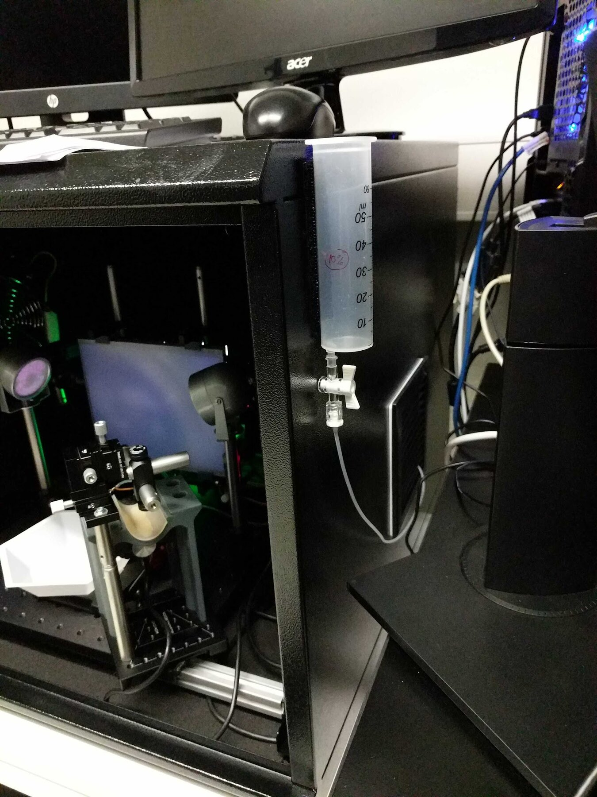
Place the rails and breadboard in the enclosure box.
{kind=link}
Put two M5 self-aligning roll-in T-nuts into each of two 200 mm rails . Attach the rails to the side guides with M5 screws. The rail which is the closest towards you should be in the first slot in the side guides. The rail which is further from you should be in the fifth slot in the side guides.
Place the baseplate of the rig on the two 200 mm rails and attach using M5 screws (phillips head screws are easiest) placed through the untapped corner holes of the baseplate into the roll-in T-nuts (below, right). Place the baseplate in the center such that on both sides the rail sticks out equally far (10.1 cm).
Continue with the build, preparing each segment outside the box but mounting it onto the main breadboard in the rig. Make sure you keep enough space for cables to be semi-organized in the back of the box - a headlamp can help see behind the screen.
{kind=link}
{kind=link}
Assembling the frame
The frame is composed chiefly of Thorlabs components and 3D printed parts.
Attach the magnetic base (KB1M/M) to the breadboard (MB3030/M) as shown in the footprint diagram using four 16 mm M6 cap screws in the sliding slots.
Screw a 16 mm M6 cap screw through the bottom of the two PH50/M post holders.
Attach each post holder (PH50/M) to the breadboard (MB3030/M).
Attach the magnetic plate (KB1M/M) to the breadboard.
{kind=link}
Note
If you have purchased the Sanworks assembled kit, you may skip to step 2.13.
On each of two TR300/M posts, slide the small 3d printed spacer (1cm) over the post holder and secure a PMTR/M clamp on top of that.
Slide the larger 3d printed spacer onto each pole above the PMTR/M.
Slide a RA90/M over each post to the top of the spacers for later attachment of the video camera (should be 15.5 cm from the top of the two posts).
Put a TR300/M post through the two RA90/M’s with the screw end sticking out towards the left of the screen (when facing the screen). Feed the pole all the way through.
Place an SWC/M 3.5 cm from the end of the TR300/M post. Angle the rotating clamp such that the indicator stripe is between the second and the third stripe.
{kind=link}
{kind=link}
Secure another PMTR/M clamp ~20cm above the lower clamps.
On each of the two lower PMTR/M clamps, use a 12mm M6 screw to connect the lower screen mount (with a slightly narrower ridge) into the side tap closest to the post. The higher ridge/smaller notch should be farther from the posts.
On each of the two higher PMTR/M clamps, use a 12mm M6 screw to connect the remaining two mounts (the upper screen mounts) to the tap closest to the post. Again the larger notch should be facing the posts.
{kind=link}
{kind=link}
Place a 1cm 3d printed spacer on the bottom of each of two TR300/M posts.
Insert and secure the TR300/M posts into each of the post holders on the breadboard with the tapered end that has the small set screw sticking out pointed upwards.
Ensure that the bottom component clamp on each side is touching the spacer.
When attaching the magnetic base, make sure the magnetic switch is on the right hand side of the setup when facing the screen.
Set the magnetic switch to be in the middle of 0 - l .
{kind=link}
{kind=link}
Assembling the screen
Keep the protective plastic film on the screen until attaching the fresnel lens [1].
On a soft surface, turn the iPad over so that the back is facing up and the input cable is running along the top.
Check that the cable input on the driver board has its locking mechanism (black plastic bar) pressed up. Cut a piece of Velcro covering 80% of the width of the driver board, and attach it securely to the back of the driver board.
Carefully connect a driver board to the input cable. There will be ~1 mm of gold contacts left visible. DO NOT FORCE THE CABLE.
This attachment is the source of many screen problems, handle gently and ensure the ribbon cable is fully seated.
{kind=link}
Attach the driver to the back of the screen with Velcro, ensuring the cable is not bending or shearing.
Check that the driver board switch is set to ‘OFF’.
Slide the rig screen onto the larger slit of the lower 3D printed mount. The driver board should be at the top of the screen on the back.
Carefully remove the plastic protective film from the rig screen. Note that there are two films on the screen - only remove the first, protective film.
Slide the Fresnel lens into the front ridge of the lower screen mount, aligning the lens with the screen. The rough side of the lens should face towards the screen.
Center the screen and fresnel lens. When the screen is centered, there should be 3 mm between the upper-right screen holder and the screen edge, and 3.3 mm between the upper left screen holder and the screen edge. Use the landmarks in the photos below to assist with alignment.
To adjust screen brightness intensity, use a polarising filter.
Note
Complete this step after installing IBLRIG v8 and configuring the display as described in Installation guide. Turn the driver-board switch to ON.
Set the screen background to grey (RGB 128, 128, 128. See screen setup section that follows).
Use a lux meter to measure the brightness of the screen in the four corners and the center in a quincunx shape. These readings will vary but should not be outside of the range of 50-60 lux after placing the polarizing filter (see below).
{kind=link}
Using a full sheet of polarizing filter, place it over the gray screen and rotate to make the screen brighter or dimmer. Using a lux meter, find an orientation that yields 50-60 lux across the screen.
Once this orientation is found, trace the top of the screen on the polarizing filter to keep that same angle when cutting the filter.
To cut the filter, place the long edge of the fresnel lens along the line you traced on the filter, and trace the outline of the fresnel lens on the filter. Cut the filter to this size using a razor or scissors.
Place the cut filter between the screen and Fresnel lens film and re-center the screen as instructed above.
{kind=link}
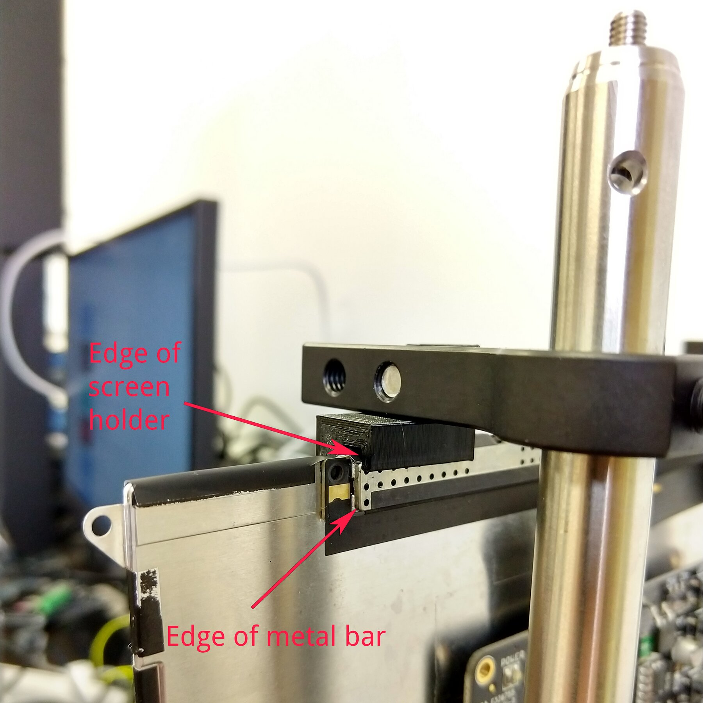
Right screen holder alignment (right as viewed from the front). The 3D-printed screen holder should be aligned precisely with the end of the perforated metal bar on the screen’s back.
{kind=link}
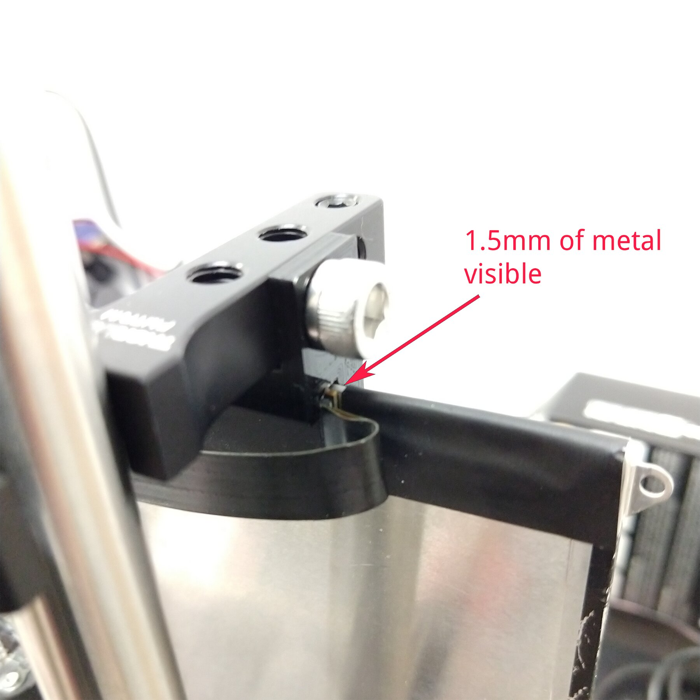
Left screen holder alignment (left as viewed from the front). When the right screen holder is aligned (see the figure above), approximately 1.5 mm of metal should be visible between the left 3D-printed screen holder and the screen’s black coating.
With the screen aligned in the screen holders, shift the fresnel lens laterally until it covers the screen. Note that the screen has asymmetric bezels - the left side bezel as viewed from the front is slightly larger than the right bezel. When properly aligned, only the bezel should be visible from the front (no LCD, see below).
{kind=link}
Firmly secure the screen and lens position by tightening the thumbscrews of the top two screen holders while pressing downwards on the screen and lens.
Press the screen clip onto the top of the screen as shown below, to help keep the flat video cable close to the screen:
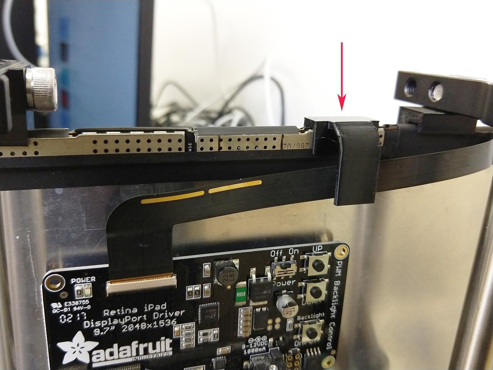
Your assembly should look like this:
{kind=link}
{kind=link}
{kind=link}
Once the screen is firmly in place and all connection points are secured tightly to the breadboard, plug in the 9V AC power cable to the Power supply IN of the adafruit driver board.
Put the power strip in an easily accessible place outside the rig, and plug the screen into that one - that way, the screen can easily be turned off at night to avoid heating up (and without having to reach for the small on/off switch on the back of the driver board).
Toggle the small On/Off switch to the on position to ensure there is some screen output. Press the small “up” button repeatedly to ensure the maximum screen output level. If there is no change in luminance when switched on, check that the ribbon cable is fully connected.
Plug the Display port connector of the screen into mini display port slot 2 on the video card of the behavior PC.
Assembling the video camera setup
Note
The behavioral setup is equipped with a Chameleon3 infrared camera and an infrared (IR) light source. If purchased through Sanworks, you may proceed to step 4.6: the Chameleon3 camera is already equipped with an IR pass filter and a tripod mount. Sanworks also places an opaque piece of plastic in front of the IR light source LEDs to diffuse the light.
The Chameleon3 camera needs to be equipped with an IR pass filter, remove the front of the camera using a small screwdriver.Remove the glass that’s in the camera and replace it with a square of the IR pass filter that you cut from the large sheet.
{kind=link}
{kind=link}
The IR light needs an opaque piece of plastic in front of the LEDs to diffuse the light.
Some models of the IR light source have a removable glass front. If this is the case: unscrew the cap of the IR light source and remove the ring inside using a pair of pliers (see picture below). Remove the glass that’s in front of the LEDs. Put the glass on a plastic weighing boat and trace the outline with a marker.
{kind=link}
Other models do not have a removable glass front, and do not have a visible ring inside. If this is the case: 3D print a circle of the same diameter (IR light template). Put this printed circle on a plastic weighing boat and trace the outline with a marker (see images below)
{kind=link}
{kind=link}
For both models: Cut out the circle from the plastic and put it in front of the LEDs and screw the cap back on.
Ensure the camera holding post is properly configured as in steps 2.7-2.9.
Attach the lens to the camera with two rings (black ring: CML05 and golden ring: CMSP100) in between.
Screw the tripod adapter (FLIR ACC-01-0003) to the underside of the camera see Note below for which side is the bottom.
{kind=link}
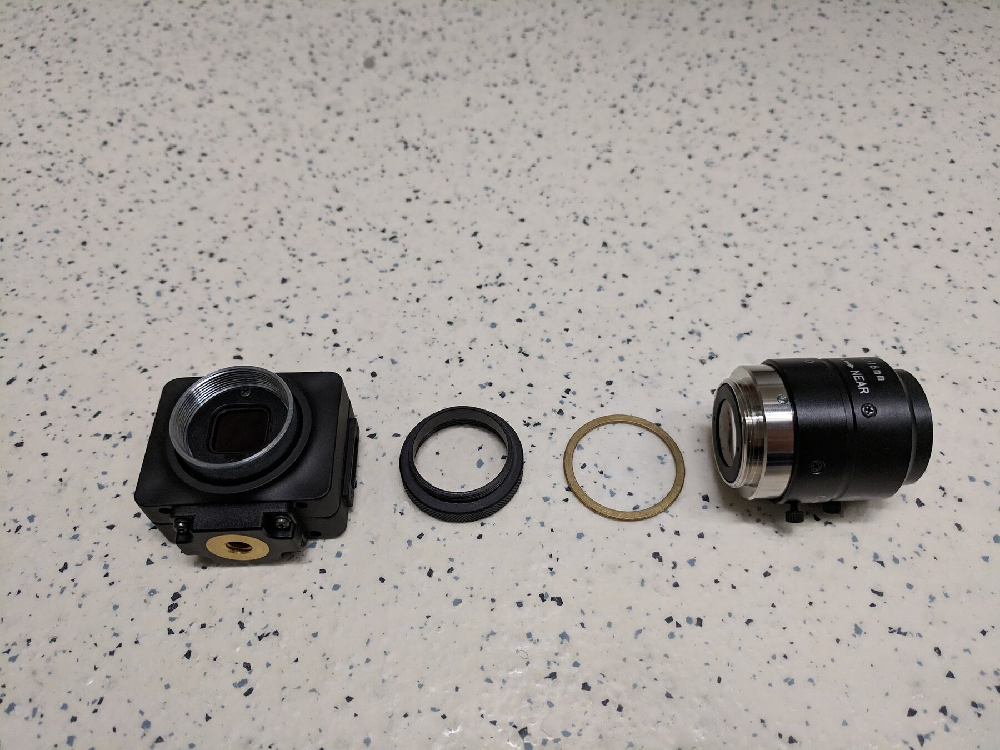
{kind=link}
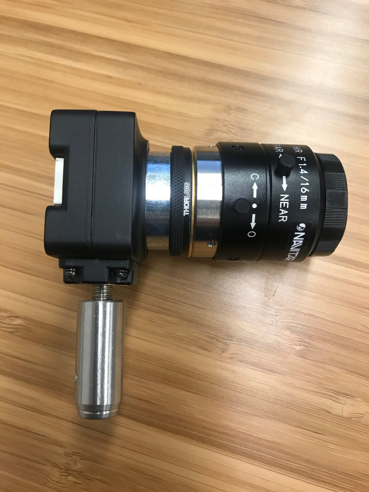
Attach the tripod adaptor to a TR30/M post using a 20mm M6 set screw (EU/UK) or a thorlabs AP25E6M ¼” 20/M6 adapter screw (US).
Keep the lens cap on until you are configuring the camera software to protect the lens.
Connect GPIO cable to the camera, this cable will later be connected to the PC.
Note
Make sure you mount the pole as shown in the picture below. When facing the camera, the blue cable should be on the right-hand side and the pole at the bottom.
{kind=link}
Placing the IR lamp:
Place a TR150/M post in the seventh hole from the front on the leftmost row of the breadboard as indicated in the footprint diagram with a 20 mm M6 set screw.
Attach the IR illuminator to the post with an M4 thumb screw. Note: it may be easier to unscrew the lamp head from its base, so as to screw that base onto the post first.
You will be asked to move the IR lamp head direction when setting up the camera.
Power the IR lamp using a 12V / 1.5 Amp (2 Amp will also work) wall adapter.
Assembling the mouse holder
The mouse holder comprises seating for the mouse, a steering wheel/encoder assembly, an articulated arm for delivering water rewards, and a head-fixation assembly.
Note
If you purchased the assembled kit through Sanworks, skip to step 6.
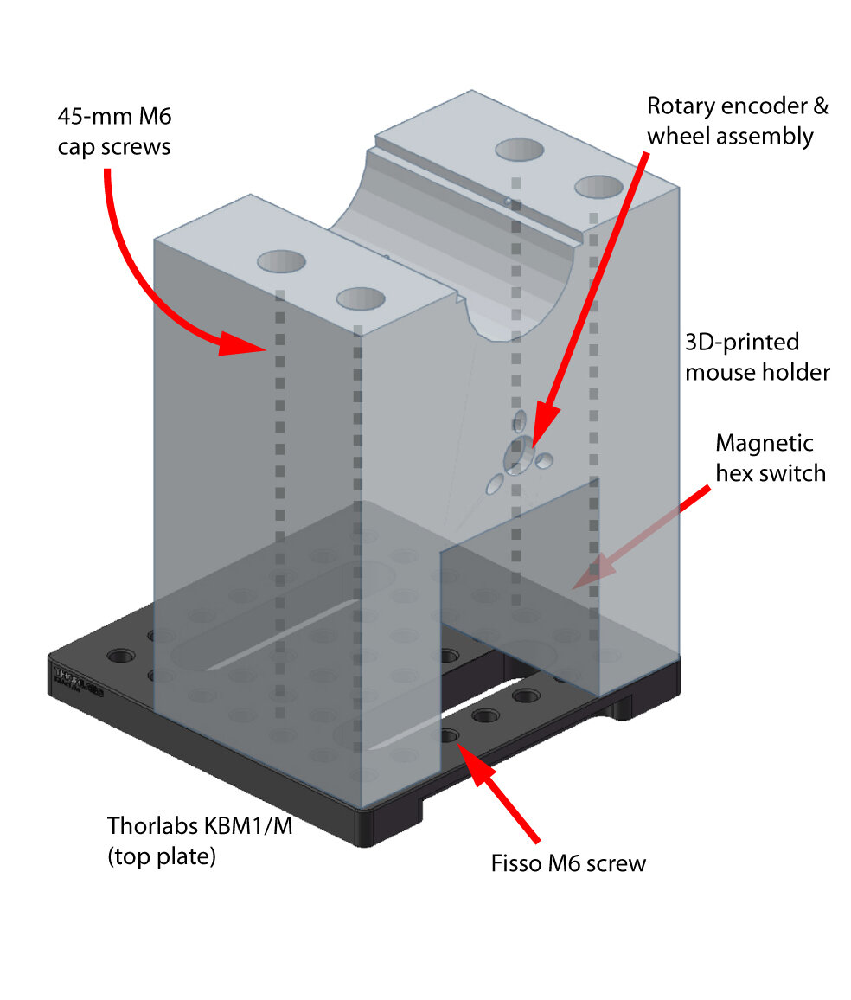 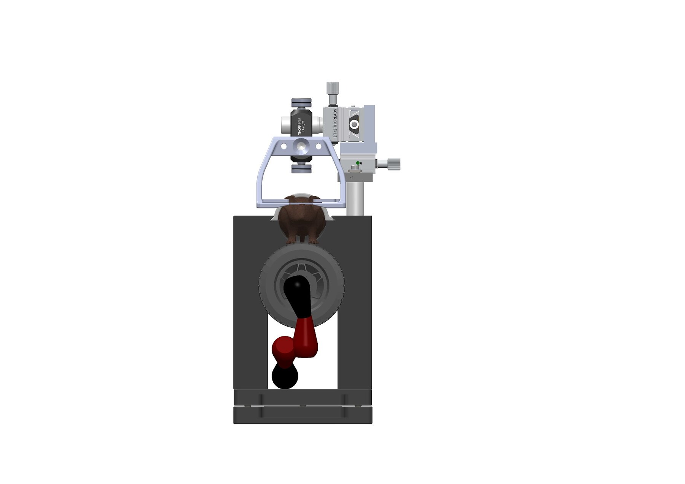 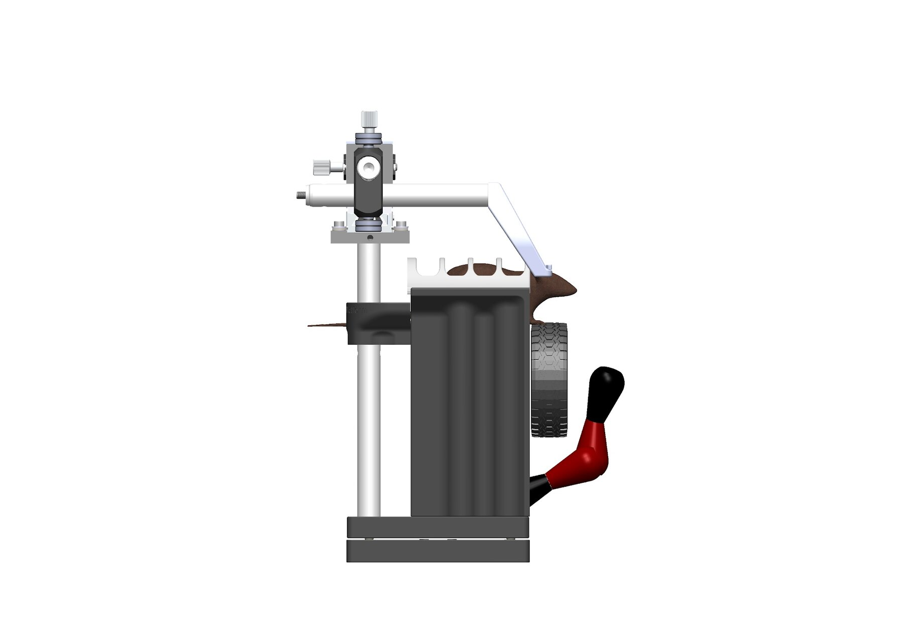
{kind=link}
{kind=link}
{kind=link}
The mouse holder assembly. Top: The mouse holder, seen from the front, shows the center bore that will accommodate the wheel assembly, as well as key attachment points to the KBM1/M breadboard. Top right: The front of the holder shows the attachment point for the Fisso arm. Bottom: The side of the holder shows the attachment point for the head-fixation assembly.
3D-print the (a) mouse holder, (b) mouse cover, and (c) wheel coupler designs. Make sure to order from Shapeways and use the material specifications listed.
Connect the wheel coupler to the shaft of the rotary encoder. It should attach securely with a strong push.
Feed the rotary encoder through the large center bore on the front plate of the mouse holder, so that the coupler is facing outward and the encoder body is housed on the underside of the mouse holder. The encoder cable should be oriented downward.
Feed three 5-mm M3 cap screws (SH3M5) through the small bores on the front plate of the mouse holder, and then screw them into the threaded holes on the face of the encoder.
To the top plate of the two-piece KBM1/M kinematic breadboard, attach the larger Fisso articulated arm to the front center hole (row 1, hole 3) of the KBM1/M, and secure tightly with an adjustable wrench.
Connect the 3D-printed mouse holder to the KBM1/M top plate using four 45-mm M6 cap screws, as shown in the diagram above. The two front screws will be in row 1 (holes 1 and 7) and the two back screws will be in row 3 (holes 1 and 7).
Once the mouse holder is in position, assemble the LEGO wheel and hub, then gently secure it to the front cross of the coupler. There should be 1-2 mm of space between the wheel and the front face of the mouse holder. Spin the wheel to ensure it moves freely with no resistance.
Connect a TR50/M post to a TR100/M post with a 20-mm M4 set screw (remove the set screw in one of the two posts, and use the set screw in the other post to connect the two posts). This option yields a 150 mm long post (vertical post seen in the pictures; good length to position the xyz controller) with M6 taps on both sides (used to connect to both the KBM1/M top plate and the DT12B/M piece of the xyz controller).
With a 20-mm M6 set screw, attach the composed post to the KBM1/M top plate at row 6, hole 7.
Use an M4 cap screw to attach the DT12B/M piece of the xyz controller to the composed x post, positioned orthogonally in relation to the KBM1/M top plate.
Connect the DT12XYZ dovetail translational stage to the DT12B/M piece.
Using an M4 set screw, attach a TR30/M post to the DT12XYZ translation stage.
Attach the RA90/M right-angle clamp to the TR30/M post, so that it is centered in relation to the mouse holder, with the second post bore pointed down.
Attach the headplate holder to the base of the TR100/M post with a 16-mm M6 cap screw.
Feed the holder/post assembly through the open bore of the RA90/M, so that the front of the holder reaches the midline of the LEGO wheel. Secure the RA90/M thumb screw.
Insert the two M3 thumb screws top-down into the headplate holder. These are to secure the animal’s headplate.
{kind=link}
Assembling the water-reward system
{kind=link}
{kind=link}
Making a spout guide. Use a length of 16AWG copper wire to extend the reach of the Fisso arm and enable water delivery to the mouse.
To make a spout guide, first cut an 8-cm length of copper wire. Using needle-nose pliers, wrap the end into a 2-mm-diameter loop, then bend it to a right angle.
Wrap the other end of the wire around the free M6 screw shaft of the Fisso arm, and secure with an M6 hex nut.
Bend the spout guide so that it extends the length of the Fisso arm toward the top of the steering wheel.
Remove the tubing that comes with the pinch valve and replace it with a single 100 cm long piece of tubing, place the pinch valve halfway the 100 cm tube.
Insert a short steel tube (component part: Steel tube, Microgroup, 316H15RW) into the valve end to avoid mice chewing on the tube.
Feed the tubing along the back of the Fisso arm and through the 2-mm loop, and adjust the tubing so ~5 mm extends. Gently secure the tubing to the Fisso with a piece of laboratory tape.
Adjust the Fisso arm and spout guide so that the tube tip is centered in the bore of the mouse holder. Make sure the Fisso does not obstruct wheel movement.
Put the pinch valve on a stack of post-its or something else (round of lab tape) that absorbs a bit of the sound - placing it directly on the breadboard will resonate and make a very loud noise when the valve opens.
Use a 65mm x 55mm rectangle of silicone rubber sheeting to line the bore where the mouse will be seated (if you see that the rubber sheet is sliding, use poster putty or tape to fix it in place). This adds a bit of padding for comfort, and can be washed with soap & warm water between sessions.
Installing the speaker
The speaker is necessary to transmit simple task-related sounds, like beepsF and white noise.
Find or make the two marks on the back of the screen as shown below. They are centered at 10.4cm from the screen edge.
{kind=link}
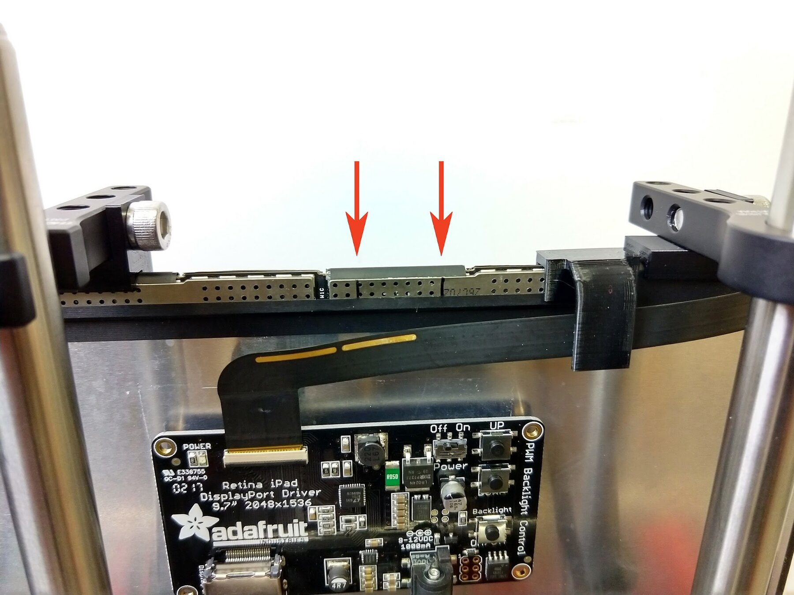
Taking care to avoid touching the flat screen cable, and avoiding the fresnel lens, mount the speaker evenly between the two marks. Make sure that the top of the screen goes all the way into the speaker mount, and that both sides of the mount are even with the screen edge.
Tighten the set screw. When you feel the screw touch the screen, it is safe to turn the screw an additional ¼ turn to fix the speaker in place. To protect the screen, do not exceed ¼ turn.
The speaker should now appear as shown below:
{kind=link}
{kind=link}
One of the two speaker wires has white writing on it. This is the negative wire:
{kind=link}
Connect the speaker, 12V power adapter, 3.5mm stereo cable and BNC-to-wire adapter to the audio amplifier board as shown below. Make sure to observe polarity of the speaker and BNC connector (black is negative):
{kind=link}
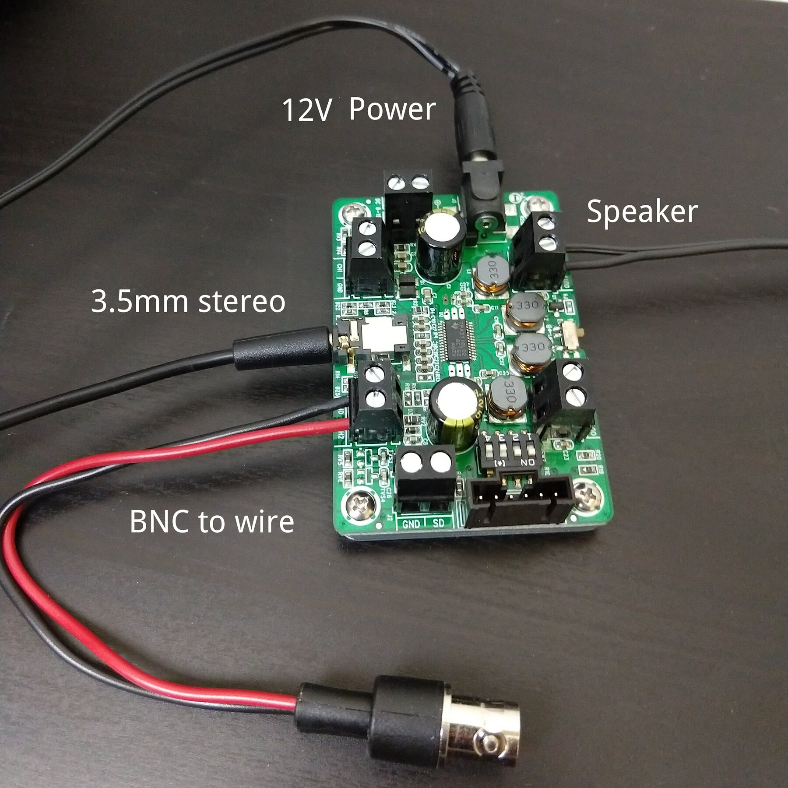
Connect one side of the 0.3m (1ft) BNC cable onto the BNC to wire adapter, and connect the other side onto the port of the state machine labeled ‘TTL I/O, In2’.
Connect the far side of the 3.5mm stereo cable to the ‘Headphones’ jack on the PC sound card at the back of the computer (make sure you plug it into the correct port otherwise no sound will be output).
{kind=link}
Open an Internet browser and play this video. You should hear sound from the speaker.
If this does not work, see the Troubleshooting section at the end of this document.
Installing the microphone
The microphone is used to record ambient sound and ultrasonic vocalizations from mice.
If you received the microphone from Sanworks, proceed to step 8.2 below as the microphone comes already assembled.
If you received the microphone from Dodotronic, you have to take the microphone out of its silver enclosure and place it into a 3D printed case.
Unscrew the black ring and remove the rubber covering on the other side (as below, left picture).
Push the black plastic case from the USB connector side (as shown below on the middle picture).
Once you have removed the circuit board from the silver enclosure, unscrew the phillips head screws that hold the board down (you have to pull off the black foams space filler too).
Detach the board from the black plastic casing.
There are two white switches on the board - make sure they’re both in the ‘Down’ position (as opposed to “ON” labelled on the board).
The board can now be snapped into the 3D-printed case (ME101__MikeEnclosure_Top and ME102__MikeEnclosure_Bottom), no hardware required.
{kind=link}
{kind=link}
{kind=link}
If you haven’t yet installed the TR150/M post (as shown in the ‘Rig Footprint Diagram’ above).
Remove the M4 set screw from the top of a TR/150M Thorlabs post using a 2mm hex wrench.
Install the TR150/M post with an M6 x 20mm set screw into the breadboard at the position shown in the diagram, mirroring the IR light.
Connect the microphone to the PC with the USB A to B-mini cable.
Mount the microphone on top of the post, with the body of the microphone oriented towards the rear of the breadboard (as shown below). Secure the microphone with an M4 x 12mm thumb screw.
{kind=link}
{kind=link}
{kind=link}
Connecting Bpod
The Bpod coordinates the input and output signals for most elements of the rig.
Connect the computer and power supply
With a microUSB-USB cable, connect Bpod’s USB port to the PCs. On Bpod 0.8, make sure this is ‘USB’ and not ‘P’ - on the newer Bpod system, there is only one USB connection.
Plug the state machine adapter (which came in the box) into its power supply, and in an electrical socket.
Note
The Bpod’s lights will turn on if it is connected to the computer via USB but not to a power supply; however, the valve will not be able to open. The Bpod must be plugged into both the PC and its power source.
Warning
DO NOT USE A USB HUB between the Bpod, its modules, and the PC.
This may result in pulses not being correctly triggered or detected.
Connect the water-reward system
Before troubleshooting, always power off the valve system by unplugging the power supply (ethernet) directly.
Connect the two yellow grounds from the pinch valve to the Port Interface board in the two ports labeled ‘VALVE’.
Plug port interface board into the Bpod state machine behavior port/port 1 (not ‘serial port’/’module’) using an ethernet cable.
Connect the camera
The camera is connected to other devices though a JST GPIO connector (a white adaptor with coloured cables).
The general purpose of each pin of the GPIO connector can be found in the table below.
{kind=link}
Source: Chameleon3 technical reference manual
The table below displays which ports are used in the setup:
Source device |
Pin |
Connected device |
|---|---|---|
JST GPIO connector |
2 (Black ; GND) |
Valve module (GND) |
5 (Purple ; GPIO2) |
Valve module (Signal ‘S’) |
|
6 (Black ; GND) |
Sound TTL (GND) |
|
4 (Green; GPIO3) |
Sound TTL (Signal) |
Connect the GPIO connector from the camera to the same port interface board as the pinch valve in the ports ‘GND’ and ‘S’.
{kind=link}
Connect (see also image below):
The valve ground (‘GND’) to pin 2 of the GPIO connector (‘GND’, black).
The valve signal (‘S’) to pin 5 of the GPIO connector (‘GPIO2’, purple).
Note: The cables from the camera connector are rather short (see picture below). You can add length by soldering an extra cable to each connector cable.
Note 2: you can attach the port interface board to the back of the camera holder with velcro, instead of lengthening the cables.
Note 3: Do not attach to the camera as it heats up and will melt most adhesives off.
{kind=link}
{kind=link}
Connect the GPIO connector from the camera to the sound module output.
Material needed:
1 x BNC cable
1 x BNC splitter
{kind=link}
2 x thin wires with different colors (preferably black and red)
Create a BNC-to-wires cable
Cut a BNC cable in half.
Solder one of the wires (red) to the signal of the BNC cable and the other (black) to the ground.
{kind=link}
Split the output of the sound module using the BNC splitter, and attach to it the BNC part of the BNC-to-wires cable you made.
{kind=link}
Solder the signal wire (red) of the BNC-to-wires cable to the pin 4 of the GPIO connector (‘GPIO3’, green).
Solder the ground wire (black) of the BNC-to-wires cable to the pin 6 of the GPIO connector (‘GND’, black).
{kind=link}
Note
If your rig uses more than one camera, the signal has to be split into as many wires as there are cameras. This is the case for the IBL Neuropixels Electrophysiology recording rig (design to be published), where three cameras are used. The instructions below are specific to this recording rig. Please skip the instructions below if you are installing the standard training rig.
Make a BNC-to-wires cable as above, but split the signal and ground into three wires.
{kind=link}
Split the input into In2 of the BPod with the BNC splitter and connect the BNC-to-wires cable to it
{kind=link}
Solder the three signal and ground wires onto the GPIO connectors of the three cameras as before (1 pair of wires per connector).
Connect the rotary encoder module
The rotary encoder module is necessary for recording the wheel movements made by the mouse.
Isolate the gray, green, brown, and white wires in the cable output of the rotary encoder.
Connect the wires to the Bpod rotary encoder: brown to 5V+, green to A, grey to B, blue (if present) to Z and white to GND by inserting the exposed wire into the correct DAQ socket and securing it with a 2-mm flathead screwdriver until tight.
{kind=link}
Plug the rotary encoder module into the PC using a microUSB-USB cable.
Connect the ‘state machine’ output to port 1 of Bpod modules using an ethernet cable. (Note: this is not the same port 1 as above, key word here: MODULE)
In Windows Device Manager, under ‘Ports (COM & LPT)’, find ‘USB Serial Device COMX’, where X is the number of the COMport. Note this down for the software install. After installing IBLRIG v8, verify the rotary encoder with the
validate_iblrighardware-validation command.
{kind=link}
Connect the photodiode (frame2TTL)
The frame2TTL records when the screen updates to a new frame by detecting brightness changes of a flickering square in the bottom right corner of the screen during a task.
IBL Frame2TTL comes with a customized clip to fit on the rig screen and an IR filter to block incoming light from the IR light in the rig.
Clip to the right lower corner of the screen, where a white/black square will flash at every screen refresh.
Later, when you run the task, make sure the Frame2TTL covers the whole flashing square.
{kind=link}
Connect the Frame2TTL module board to a USB port on the computer using a USB - microUSB cable.
Connect a male/male BNC cable from Frame2TTL to the Bpod state machine connector labeled “ TTL I/O In1”.
Note
Timing. If you put a photodetector at the top of the screen and another at the bottom, then turn the screen white, the one at the top will have a signal approximately 15 ms before the one at the bottom. In other words, the screen paints from top to bottom on each refresh cycle.
In the IBL rig, the middle of the screen where the stimulus appears will thus turn on approximately 8 ms before the Frame2TTL placed at the bottom of the screen.
Connect the environmental sensor
The ambient sensor records the temperature, humidity, and air pressure in the rig while a task is running.
Connect the ambient sensor to a Bpod module port #2 using an ethernet cable as shown below.
{kind=link}
Do not connect the ambient sensor to the computer with a USB cable.
Place the ambient sensor in the far right corner of the base breadboard with Velcro tape.
Finished product
Congratulations! You have built the hardware for an IBL rig! Your finished product should look something like this:
{kind=link}
Next, install and configure IBLRIG v8 as described in Installation guide.
Hardware troubleshooting
For current diagnostic procedures, see the First Aid,
Sound Issues, Screen Issues, and
Camera Issues sections. The validate_iblrig command checks the
configured hardware and reports common connection problems.
References
International Brain Laboratory et al. (2020) A standardized and reproducible method to measure decision-making in mice
Burgess et al. (2019) High-yields methods for accurate two-alternative visual psychophysics in head-fixed mice
International Brain Laboratory et al. (2019) Data architecture and visualization for a large-scale neuroscience collaboration